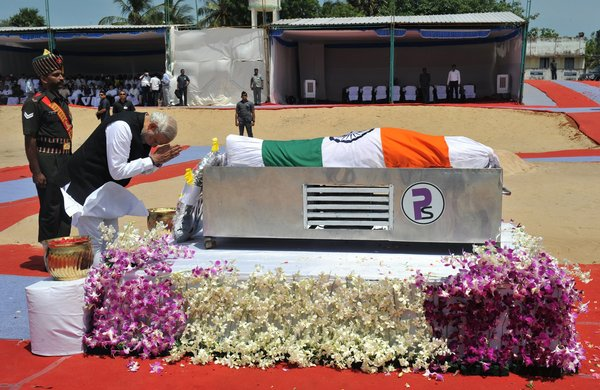

Biography Of Abdul Kalam
Death Of Abdul Kalam

On 27 July 2015, Kalam travelled to Shillong to deliver a lecture on "Creating a Livable Planet Earth"
at the Indian Institute of Management Shillong. While climbing a flight of stairs, he experienced some
discomfort, but was able to enter the auditorium after a brief rest.At around 6:35 p.m. IST, only five
minutes into his lecture, he collapsed.He was rushed to the nearby Bethany Hospital in a critical condition;
upon arrival, he lacked a pulse or any other signs of life.[85] Despite being placed in the intensive
care unit, Kalam was confirmed dead of a sudden cardiac arrest at 7:45 p.m IST.His last words, to his
aide Srijan Pal Singh, were reportedly: "Funny guy! Are you doing well?"
Following his death, Kalam's body was airlifted in an Indian Air Force helicopter from Shillong
to Guwahati, from where it was flown to New Delhi on the morning of 28 July in an air force C-130J Hercules.
The flight landed at Palam Air Base that afternoon and was received by the President, the Vice-President,
the Prime Minister, Chief Minister of Delhi Arvind Kejriwal, and the three service chiefs of the
Indian Armed Forces, who laid wreaths on Kalam's body.[90] His body was then placed on a gun carriage
draped with the Indian flag and taken to his Delhi residence at 10 Rajaji Marg; there, the public and
numerous dignitaries paid homage, including former prime minister Manmohan Singh, Congress President
Sonia Gandhi and Vice-President Rahul Gandhi, and Uttar Pradesh Chief Minister Akhilesh Yadav.
On the morning of 29 July, Kalam's body, wrapped in the Indian flag, was taken to Palam Air Base
and flown to Madurai in an air force C-130J aircraft, arriving at Madurai Airport that afternoon.
His body was received at the airport by the three service chiefs and national and state dignitaries,
including cabinet ministers Manohar Parrikar, Venkaiah Naidu, Pon Radhakrishnan and the governors of
Tamil Nadu and Meghalaya, K Rosaiah and V. Shanmuganathan. After a brief ceremony, Kalam's body was
flown by air force helicopter to the town of Mandapam, from where it was taken in an army truck to his
hometown of Rameswaram. Upon arriving at Rameswaram, his body was displayed in an open area in front of
the local bus station to allow the public to pay their final respects until 8 p.m. that evening.
On 30 July 2015, the former president was laid to rest at Rameswaram's Pei Karumbu Ground with
full state honours. Over 350,000 people attended the last rites, including the Prime Minister,
the governor of Tamil Nadu and the chief ministers of Karnataka, Kerala and Andhra Pradesh.
Reaction:
India reacted to Kalam's death with an outpouring of grief; numerous tributes were paid to the former
president across the nation and on social media.[96] The Government of India declared a seven-day state
mourning period as a mark of respect.[97] President Pranab Mukherjee, Vice-President Hamid Ansari,
Home Minister Rajnath Singh, and other leaders condoled the former President's demise.Prime Minister
Narendra Modi said "[Kalam's] death is a great loss to the scientific community. He took India to great heights.
He showed the way."Former Prime Minister Dr Manmohan Singh, who had served as prime minister under Kalam,
said, "our country has lost a great human being who made phenomenal contributions to the promotion of self
reliance in defence technologies. I worked very closely with Dr. Kalam as prime minister and I greatly
benefited from his advice as president of our country. His life and work will be remembered for generations
to come."[99] ISRO chairman A. S. Kiran Kumar called his former colleague "a great personality and a gentleman",
while former chairman G. Madhavan Nair described Kalam as "a global leader" for whom "the downtrodden and poor
people were his priority. He always had a passion to convey what is in his mind to the young generation",
adding that his death left a vacuum which none could fill.